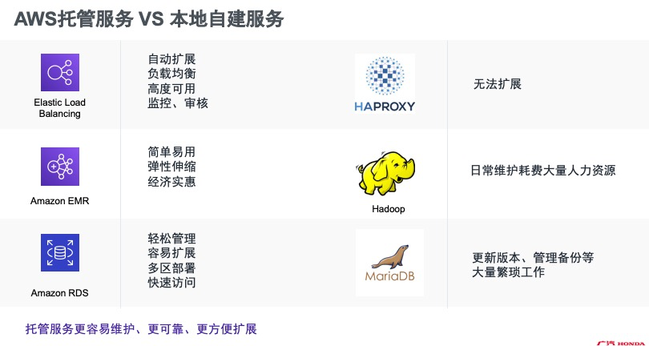
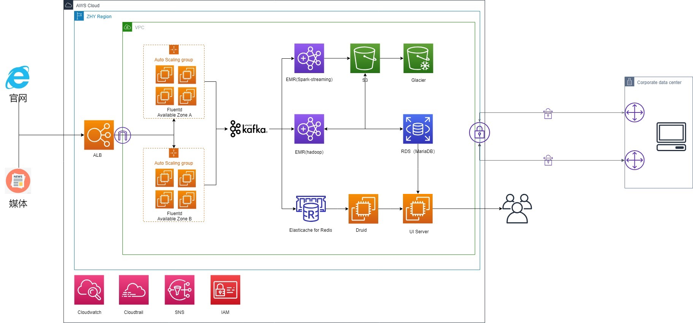

客户简介：
广州本田汽车有限公司成立于1998年7月1日，是由广州汽车集团股份有限公司、本田技研工业株式会社和本田技研工业(中国)投资有限公司按50：40：10的股比共同投资建设和经营的企业，合资年限为30年。2009年4月，广州本田汽车有限公司更名为广汽本田汽车有限公司（以下简称“GHAC”）。广汽本田洞察汽车市场变化及原有用户的升级需求，引入Honda高端品牌Acura（讴歌），2016年广汽本田迎来了Honda、理念和Acura（讴歌）三品牌运营的新阶段。目前，Honda品牌产品包括：雅阁（ACCORD）、冠道（AVANCIER）、奥德赛（ODYSSEY）、缤智（VEZEL）、凌派（CRIDER）、锋范（CITY）和飞度（FIT）等系列车型；理念（EVERUS）品牌产品包括：理念S1车型；Acura（讴歌）品牌产品包括：CDX、TLX-L、RDX车型以及进口车型。三大产品品牌并驾齐驱，形成强势的品牌矩阵，满足中国消费者日益多样化的产品需求。
博思云为帮助GHAC迁移和重构了数据管理中心（DMP）、极大缩减了数据中心运维成本、提高了数据利用效率、重新为广汽本田赋能。
面临的问题：

1. 数据量波动较大、为满足峰值需要采购大量的服务器。DMP接入了GHAC网站数据、线下门店统计数据、第三方分析数据等多方数据，未来考虑接入智能电动汽车充电桩等数据。数据量在白天较大、在19:00左右达到峰值，然而午夜的数据量极少,大部分云厂商预付费模式会在业务初期消耗极大资金。
2.作为汽车制造企业、GHAC在大数据分析和BI上并不想投入过多的人力资源、但是Hadoop生态的基础架构运维和Debug需要数据团队分配额外的技术工程师负责。
3.GHAC拥有超过8000位员工,DMP系统现有的身份和访问管理基于账号和静态密码，无法实现密码轮换和基于角色的访问控制。
Bosicloud解决方案
博思云为(Bosicloud)首先将EC2 Autoscaling应用至GHAC的数据收集服务器、借助这项AWS提供的水平拓展服务，GHAC即可以实现根据服务器CPU使用率部署合适的计算资源，也可以执行定时计划、在规定的时间段增加/减少服务器数量以满足业务需求。以尽可能低的成本保证稳定、可预测的性能。
- 选择Kafka作为消息队列、解耦合数据收集端和数据消费端。
- 面对实时数据、博思云为迁移了DMP系统原有的Spark-Streaming组件对实时数据进行处理。之后存储到数据湖S3中、超过1年的数据将会被存储在更经济的Glacier中持久化存储。
- 面对批量数据、在使用Hadoop框架时。博思云为选择AWS EMR服务作为批量数据处理中心。Amazon EMR 提供的托管 Hadoop 框架可以让GHAC快速、轻松、经济高效地在多个动态可扩展的 Amazon EC2 实例中处理大量数据。客户还可以运行其他常用的分布式框架（例如 EMR 中的 Apache Spark、HBase、Presto 和 Flink），以及与其他 AWS 数据存储服务（例如 Amazon S3 和 Amazon DynamoDB）中的数据进行交互。
在迁移后，负载均衡、数据处理、数据库等方面获得了极大的优势：
最终架构图：
迁移成果( Outcome )：
在迁移至AWS后，DMP平台服务器成本减少了29%。通过使用AWS EMR服务，极大减少了Hadoop工程师的运维压力。利用EC2 Autoscaling，UI&API界面可用性提升至99.9%。